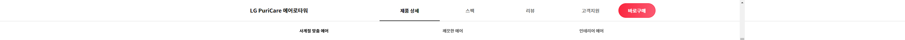
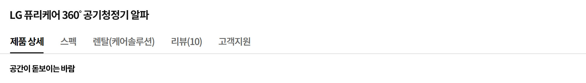

세상에 없던 새로운 바람 이제 공기까지 쿨하게 LG퓨리케어 Glen Tower 공기청정팬
공간이 돋보이는 바람
Glendy 디자인
자연에서 영감받은
수려한 자태
대자연 협곡을 모티브로 탄생한 Glen Tower는 당신의 공간을 기분 좋은 바람으로 채워줍니다 여러 갈래의 공기를 하나로 모아주는 공기역학 기술로 협곡에서 불어오는 듯한 자연의 신선한 바람을 그대로 전해주죠
영상 or 이미지 01-1
영상 or 이미지 01-1
4가지 컬러 옵션
공간에 맞춤하는
예술적인 컬러
협곡을 형상화한 우아한 실루엣은 존재 자체로 예술적인 분위기를 연출합니다 여기에 공간의 쓰임새와 당신의 취향에 맞춰 유행을 타지 않는 4가지 컬러를 자유롭게 선택할 수 있죠
영상 or 이미지 01-2
영상 or 이미지 01-2
- 어떤 공간에도 조화롭게 스며드는 화이트
- 단정하면서 따뜻한 감성을 지닌 로맨틱 로즈
- 싱그러운 자연을 담은 그라운드 그린
- 우아하면서 은은하게 빛나는 샌드 베이지
조용하고 쾌적한 바람
바람모드
닿는 순간 기분 좋은
건강한 바람
기분까지 상쾌해지는 천혜의 자연 바람을 거실 소파, 침대에 누워 편하게 느껴보세요 1.5m 넓은 바람 폭으로 부드럽게 퍼지는 쾌적한 바람이 집 안 곳곳을 기분 좋은 시원함으로 빠르게 채워줍니다
영상 or 이미지 02-1
영상 or 이미지 02-1
청정모드
사계절을 아우르는
청량한 바람
직바람 없이 숲속처럼 은은한 서늘함을 원한다면 청정모드를 활용해보세요 바람의 방향을 전후면, 상단 3면으로 나눠 퍼트려 청량한 공기를 산뜻하게 채워줍니다
영상 or 이미지 02-2
영상 or 이미지 02-2
U자 모양 구조 - TBD
바람의 기준을
바꾸는 기술
팬 없이도 전례 없던 시원함을 완성할 수 있었던 이유, 바로 비행기 제트엔진 기술과 자동차 고효율 엔진 기술 덕분이죠 주변의 공기를 더 많이 빠르게 흡입한 후 부드럽게 확산시켜 넓은 공간도 거뜬히 커버합니다
영상 or 이미지 02-3
영상 or 이미지 02-3
저소음 팬 & 유로시스템
소리를 남기지 않는
쿨한 바람
강력한 바람을 갖추고도 느껴지지 않을 만큼 조용합니다 3D 블레이드 날개와 다공성 유로 설계로 도서관 수준의 고요함을 완성했죠 아이가 잠든 방 안에서도 맘 놓고 사용하세요
영상 or 이미지 02-4
영상 or 이미지 02-4
에어터널
첨단 냉방 기술의 집약체
이런 놀라운 바람을 완성할 수 있던 배경에는 바로 LG 에어케어 기술이 있었습니다 휘센 에어컨의 기류 제어 기술인 에어가드를 Glen Tower 에어터널에 그대로 적용시켜 압도적 바람결, 독보적 저소음을 탄생시켰죠
영상 or 이미지 02-5
영상 or 이미지 02-5
언제나 안심되는 바람
안심공기 시스템
남다른 공기를 만드는
남다른 청결
사계절 필수 가전이니까 청결함은 기본이죠 UVC-LED로 필터와 팬은 물론 바람이 닿는 모든 통로를 99.99% 정교하게 살균합니다 여기에 초정밀 센서와 초미세 필터가 보이지 않는 위험 물질까지 말끔하게 제거해주죠
영상 or 이미지 03-1
영상 or 이미지 03-1
안심을 더하는
트리플 인증
각종 알레르기와 유해물질로부터 안전함을 인증받아 아이가 있는 집에서도 안심하고 사용할 수 있어요
영상 or 이미지 03-1-2
영상 or 이미지 03-1-2
트루 토탈케어 필터
결벽에 가까운 살균 능력
국가공인 인증기관 LG 공기 과학 연구소의 놀라운 기술력으로 탄생한 트루 토탈케어 필터는 초미세먼지, 5대 유해가스, 바이러스, 유해 세균까지 99.99% 완벽히 제거합니다 교체형 극세필터로 관리도 참 쉽고 편하죠
영상 or 이미지 03-2
영상 or 이미지 03-2
LG ThinQ
언제 어디서나
보기 쉽고 쓰기 쉽게
켜고 끄는 간단한 설정부터 필터 수명과 실내 환경 모니터링 같은 세심한 케어까지 LG ThinQ 앱 하나면 충분합니다
영상 or 이미지 04
영상 or 이미지 04
고지 사항 확인하기
-
1.제목
- 내용
- 내용2
-
※제품 이미지 및 특장점 등에는 이해를 돕기 위해 연출된 이미지가 포함되어 실제 제품과 차이가 있을 수 있으며, 사용환경에 따라 차이가 있을 수 있습니다.